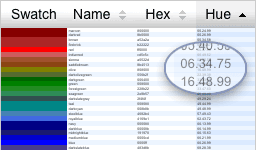

 This example builds on the Column Sort example. It makes use of the Y.Color module. It also shows how to filter the Model List of the DataTable to get a subset of the data.
Click on the column headers to sort the color swatches in different ways. Filter the data with the radio buttons on the right.
Note: be sure to add the yui3-skin-sam classname to the
page's <body> element or to a parent element of the widget in order to apply
the default CSS skin. See Understanding Skinning.
<body class="yui3-skin-sam"> <!-- You need this skin class -->
To add column sorting functionality to any DataTable, simply include the datatable-sort module in your use() line and add the sortable: true configuration to the configuration objects of the columns you want to be sortable, as shown in the Column Sorting example.
Note, if you want all columns to be sortable, simply set sortable: true on the DataTable instance.
YUI().use("datatable-sort", function(Y) {
// code goes here
});
This example also uses the color-harmony module
YUI().use("datatable-sort", 'color-harmony', function(Y) {
// code goes here
});
Color Data
The color data for this example comes from http://www.w3.org/TR/css3-color/#svg-color. The data contains only the name of the color and its hex value.var myData = [
{name: 'antiquewhite', hex: 'faebd7'},
{name: 'aqua', hex: '00ffff'},
{name: 'aquamarine', hex: '7fffd4'},
// ... a lot more colors
{name: 'whitesmoke', hex: 'f5f5f5'},
{name: 'yellow', hex: 'ffff00'},
{name: 'yellowgreen', hex: '9acd32'}
];
Generating a Color Number
Sorting and filtering can help users find the right color. Hex values don't help much in sorting the colors in a visually logical way. Later in the code, the following function will use the Y.Color module to generate a special color number for each hex value. This color number will be more useful in sorting and filtering.
/* This takes a hex value and generates a numeric string
* in the format "01.23.45"
* Each pair of digits represents the Hue, Saturation, or Brightness
* of the color in a range of 00 to 99 (always 2 digits).
* These strings sort in a more visually logical way for colors.
* The sequence of digits can be changed to sort in different ways.
* such as hh.ss.bb for sorting first by hue, then saturation,
* or bb.hh.ss for sorting first by brightness, then hue, then saturation.
* The dots are only for human readability
*/
function getColorNum(hex, sortType) {
// An array of color property values
// [hue, saturation, lightness]
var HSL = Y.Color.toArray(Y.Color.toHSL(hex)),
hNum, // hue
sNum, // saturation
// get the computed brightness from the hex value
bNum = Y.Color.getBrightness(hex).toString();
// isolate hue part from HSL. converted to 2 digits
hNum = Math.floor((HSL[0] * 10) / 36.01).toString();
hNum = (hNum.length < 2) ? ('0' + hNum) : hNum;
// isolate sat part from HSL. converted to 2 digits
sNum = Math.floor((HSL[1] * 10) / 10.01).toString();
sNum = (sNum.length < 2) ? ('0' + sNum) : sNum;
// assure brightness is 2 digits
bNum = (bNum.length < 2) ? ('0' + bNum) : bNum;
bNum = (bNum === "100") ? "99" : bNum;
if (sortType === "hbs") {
return hNum + '.' + bNum + '.' + sNum; // hue.bright.sat
} else if (sortType === "bhs") {
return bNum + '.' + hNum + '.' + sNum; // bright.hue.sat
}
}
The DataTable Instance
The DataTable instance will include:- Column configs that add new columns
- A recordType that will populate the DataTable's ModelList so that some of the additional columns can be sortable
- Data
- An initial sorting config
myTable = new Y.DataTable({
columns: [
// code goes here
],
recordType: {
// code goes here
},
data: myData,
sortBy: { hbs: 'desc' }
}).render("#cTable");
We'll now add the details to the DataTable instance.
Formatter - Adding Columns
The provided data from var = myData only has two properties per row to use as columns, but we are adding more columns in the columns config. A Swatch column allows users to see the colors. We used a formatter to set the content to be a <div> with the background color accessed from the hex value of each row. Since there's no swatch property in myData, this column cannot be made sortable.
We're also adding 2 columns that will allow sorting by Hue and Brightness priorities respectively. The DataTables ModelList (where myData is stored) doesn't contain any data for these columns yet. That will be added by the recordType. See next snippet.
myTable = new Y.DataTable({
columns: [
{ key: "swatch",
label: 'Swatch',
// Use formatter to add a div swatch in each cell
// Color the background-color from hex value in each row
formatter: function(o) {
return '<div class="swatch" style="' +
'background-color: #' + o.data.hex + ';' +
'"></div>';
},
sortable: false,
allowHTML: true
},
{ key: "name",
label: 'Color Name',
sortable: true
},
{ key: "hex",
label: 'Hex',
sortable: true
},
{ key: "hbs",
label: 'Hue', // hue.bright.sat
sortable: true
},
{ key: "bhs",
label: 'Bright', // bright.hue.sat
sortable: true
}
],
recordType: {
// see the next code snippet below
},
data: myData,
sortBy: { hbs: 'desc' }
}).render("#cTable");
RecordType - Sortable Generated Columns
As described in the Sortable Generated Columns example, we're using a getter to return a color number string from the getColorNum function shown above. This puts these values in the DataTable's ModelList so they'll be filterable and the columns can be sortable.
myTable = new Y.DataTable({
columns: [
// see the previous code snippet above
],
recordType: {
swatch: {},
name: {},
hex: {},
hbs: {
getter: function() {
// create a new attribute in the model
// and generate a sortable color number
// from the hex value for each Model
return getColorNum(this.get('hex'), 'hbs');
}
},
bhs: {
getter: function() {
// do the same for bright.hue.sat
return getColorNum(this.get('hex'), 'bhs');
}
}
},
data: myData,
sortBy: { hbs: 'desc' } // initial sorting
}).render("#cTable");
Filtering
The filterModel function filters the original data of the DataTable to get a subset. See the example Filtering the Model List for a simpler example of filtering.
// This filters the DataModel to have a subset of it's original
// data
function filterModel(filterType) {
// reset model list to include all colors to prepare for filter
myTable.set('data', myData);
var list = myTable.data,
filteredData = list.filter({asList: true}, function (list) {
var hbsStr = list.get('hbs'), // get the hue emphasized color number
bright = hbsStr.substring(3, 5), // only the 2 brightness digits
sat = hbsStr.substring(6, 8), // only the 2 saturation digits
type; // clicked filter type
// Depending on which filter radio was clicked,
// filter the DataTable's modelList to include a
// subset of models/rows/colors
if (filterType === 'filter-all') {
// Don't show black, white, or grays
type = sat >= 1;
} else if (filterType === 'filter-tint') {
// Bright colors that are not gray or white
type = (bright >= 75) && (sat >= 1);
} else if (filterType === 'filter-shade') {
// Darker colors that are not grayish
type = (bright <= 50) && (sat >= 20);
} else if (filterType === 'filter-midtone') {
// Middle brightness colors that are not grayish
type = (bright >= 50) && (bright <= 75) && (sat >= 20);
} else if (filterType === 'filter-mute') {
// Low saturation (grayish) but not pure grays
type = (sat <= 55) && (sat >= 1);
} else if (filterType === 'filter-gray') {
// Only colors that are completely gray
type = sat === '00';
}
return type;
});
myTable.set('data', filteredData);
}
The filterModel function is used in these ways.
// initial filtering of the dataTable's modelList to muted colors
filterModel('filter-mute');
// listen for filter change
Y.all('.filters').on('click', function(e) {
filterModel(e.target.get('id'));
});
Full Code Listing
The CSS
.example {
zoom: 1;
}
.example:after {
content: "";
display: block;
clear: both;
}
.left-column {
overflow: hidden;
float: left;
}
.right-column {
margin-left: 390px;
}
/* Swatch styling */
.yui3-skin-sam td.yui3-datatable-cell {
/* override vertical cell padding so swatches fill cells */
padding: 0 0.5em;
}
.yui3-skin-sam td.yui3-datatable-col-swatch {
padding: 0;
}
.swatch {
height: 1.4em;
}
#cTable .yui3-datatable-cell {
font-size: 70%;
}
#cTable .view-small .yui3-datatable-cell {
font-size: 25%;
}
/* layout styles */
#small-swatch-checkbox {
margin-top: 4em;
}
.filter-radios label {
display: block;
}
.example .content {
padding: 0 5px;
}
/* Styles for UI sample swatches in filtering radios */
.filter-radios label span {
background: url(../assets/datatable/img/swatch_colors.png) no-repeat;
display: inline-block;
vertical-align: middle;
height: 30px;
width: 80px;
margin: 0.3em;
}
.filter-radios .examples-all {
background-position: 0px 0px;
}
.filter-radios .examples-tint {
background-position: 0px -30px;
}
.filter-radios .examples-midtone {
background-position: 0px -60px;
}
.filter-radios .examples-shade {
background-position: 0px -90px;
}
.filter-radios .examples-mute {
background-position: 0px -120px;
}
.filter-radios .examples-gray {
background-position: 0px -150px;
}
The HTML
<div class="left-column">
<div id="cTable"></div>
</div>
<div class="right-column">
<div class="filter-radios">
<!-- Radios for filtering colors -->
<label for="filter-all">
<input id="filter-all" class="filters" type="radio" name="filters"/>
<span class="examples-all"></span>All Colors
</label>
<label for="filter-tint">
<input id="filter-tint" class="filters" type="radio" name="filters"/>
<span class="examples-tint"></span>Tints
</label>
<label for="filter-midtone">
<input id="filter-midtone" class="filters" type="radio" name="filters"/>
<span class="examples-midtone"></span>Mid-tones
</label>
<label for="filter-shade">
<input id="filter-shade" class="filters" type="radio" name="filters"/>
<span class="examples-shade"></span>Shades
</label>
<label for="filter-mute">
<input id="filter-mute" class="filters" type="radio" checked name="filters"/>
<span class="examples-mute"></span>Muted
</label>
<label for="filter-gray">
<input id="filter-gray" class="filters" type="radio" name="filters"/>
<span class="examples-gray"></span>Black, white, and grays
</label>
</div>
<!-- Small swatches checkbox -->
<label for="small-swatch-checkbox">
<input id="small-swatch-checkbox" type="checkbox"/>
Small swatches (fit more on the page)
</label>
</div>
The JavaScript
YUI().use('datatable-sort', 'color-harmony', function (Y) {
// The source of this data is http://www.w3.org/TR/css3-color/
var filterBy,
myData = [
{name: 'antiquewhite', hex: 'faebd7'},
{name: 'aqua', hex: '00ffff'},
{name: 'aquamarine', hex: '7fffd4'},
{name: 'beige', hex: 'f5f5dc'},
{name: 'bisque', hex: 'ffe4c4'},
{name: 'black', hex: '000000'},
{name: 'blanchedalmond', hex: 'ffebcd'},
{name: 'blue', hex: '0000ff'},
{name: 'blueviolet', hex: '8a2be2'},
{name: 'brown', hex: 'a52a2a'},
{name: 'burlywood', hex: 'deb887'},
{name: 'cadetblue', hex: '5f9ea0'},
{name: 'chartreuse', hex: '7fff00'},
{name: 'chocolate', hex: 'd2691e'},
{name: 'coral', hex: 'ff7f50'},
{name: 'cornflowerblue', hex: '6495ed'},
{name: 'cornsilk', hex: 'fff8dc'},
{name: 'crimson', hex: 'dc143c'},
{name: 'cyan', hex: '00ffff'},
{name: 'darkblue', hex: '00008b'},
{name: 'darkcyan', hex: '008b8b'},
{name: 'darkgoldenrod', hex: 'b8860b'},
{name: 'darkgray', hex: 'a9a9a9'},
{name: 'darkgreen', hex: '006400'},
{name: 'darkkhaki', hex: 'bdb76b'},
{name: 'darkmagenta', hex: '8b008b'},
{name: 'darkolivegreen', hex: '556b2f'},
{name: 'darkorange', hex: 'ff8c00'},
{name: 'darkorchid', hex: '9932cc'},
{name: 'darkred', hex: '8b0000'},
{name: 'darksalmon', hex: 'e9967a'},
{name: 'darkseagreen', hex: '8fbc8f'},
{name: 'darkslateblue', hex: '483d8b'},
{name: 'darkslategray', hex: '2f4f4f'},
{name: 'darkturquoise', hex: '00ced1'},
{name: 'darkviolet', hex: '9400d3'},
{name: 'deeppink', hex: 'ff1493'},
{name: 'deepskyblue', hex: '00bfff'},
{name: 'dimgray', hex: '696969'},
{name: 'dodgerblue', hex: '1e90ff'},
{name: 'firebrick', hex: 'b22222'},
{name: 'forestgreen', hex: '228b22'},
{name: 'fuchsia', hex: 'ff00ff'},
{name: 'gainsboro', hex: 'dcdcdc'},
{name: 'gold', hex: 'ffd700'},
{name: 'goldenrod', hex: 'daa520'},
{name: 'gray', hex: '808080'},
{name: 'green', hex: '008000'},
{name: 'greenyellow', hex: 'adff2f'},
{name: 'hotpink', hex: 'ff69b4'},
{name: 'indianred', hex: 'cd5c5c'},
{name: 'indigo', hex: '4b0082'},
{name: 'khaki', hex: 'f0e68c'},
{name: 'lawngreen', hex: '7cfc00'},
{name: 'lemonchiffon', hex: 'fffacd'},
{name: 'lightblue', hex: 'add8e6'},
{name: 'lightcoral', hex: 'f08080'},
{name: 'lightgoldenrodyellow', hex: 'fafad2'},
{name: 'lightgray', hex: 'd3d3d3'},
{name: 'lightgreen', hex: '90ee90'},
{name: 'lightpink', hex: 'ffb6c1'},
{name: 'lightsalmon', hex: 'ffa07a'},
{name: 'lightseagreen', hex: '20b2aa'},
{name: 'lightskyblue', hex: '87cefa'},
{name: 'lightslategray', hex: '778899'},
{name: 'lightsteelblue', hex: 'b0c4de'},
{name: 'lime', hex: '00ff00'},
{name: 'limegreen', hex: '32cd32'},
{name: 'maroon', hex: '800000'},
{name: 'mediumaquamarine', hex: '66cdaa'},
{name: 'mediumblue', hex: '0000cd'},
{name: 'mediumorchid', hex: 'ba55d3'},
{name: 'mediumpurple', hex: '9370db'},
{name: 'mediumseagreen', hex: '3cb371'},
{name: 'mediumslateblue', hex: '7b68ee'},
{name: 'mediumspringgreen', hex: '00fa9a'},
{name: 'mediumturquoise', hex: '48d1cc'},
{name: 'mediumvioletred', hex: 'c71585'},
{name: 'midnightblue', hex: '191970'},
{name: 'moccasin', hex: 'ffe4b5'},
{name: 'navajowhite', hex: 'ffdead'},
{name: 'navy', hex: '000080'},
{name: 'oldlace', hex: 'fdf5e6'},
{name: 'olive', hex: '808000'},
{name: 'olivedrab', hex: '6b8e23'},
{name: 'orange', hex: 'ffa500'},
{name: 'orangered', hex: 'ff4500'},
{name: 'orchid', hex: 'da70d6'},
{name: 'palegoldenrod', hex: 'eee8aa'},
{name: 'palegreen', hex: '98fb98'},
{name: 'paleturquoise', hex: 'afeeee'},
{name: 'palevioletred', hex: 'db7093'},
{name: 'papayawhip', hex: 'ffefd5'},
{name: 'peachpuff', hex: 'ffdab9'},
{name: 'peru', hex: 'cd853f'},
{name: 'pink', hex: 'ffc0cb'},
{name: 'plum', hex: 'dda0dd'},
{name: 'powderblue', hex: 'b0e0e6'},
{name: 'purple', hex: '800080'},
{name: 'red', hex: 'ff0000'},
{name: 'rosybrown', hex: 'bc8f8f'},
{name: 'royalblue', hex: '4169e1'},
{name: 'saddlebrown', hex: '8b4513'},
{name: 'salmon', hex: 'fa8072'},
{name: 'sandybrown', hex: 'f4a460'},
{name: 'seagreen', hex: '2e8b57'},
{name: 'sienna', hex: 'a0522d'},
{name: 'silver', hex: 'c0c0c0'},
{name: 'skyblue', hex: '87ceeb'},
{name: 'slateblue', hex: '6a5acd'},
{name: 'slategray', hex: '708090'},
{name: 'springgreen', hex: '00ff7f'},
{name: 'steelblue', hex: '4682b4'},
{name: 'tan', hex: 'd2b48c'},
{name: 'teal', hex: '008080'},
{name: 'thistle', hex: 'd8bfd8'},
{name: 'tomato', hex: 'ff6347'},
{name: 'turquoise', hex: '40e0d0'},
{name: 'violet', hex: 'ee82ee'},
{name: 'wheat', hex: 'f5deb3'},
{name: 'white', hex: 'ffffff'},
{name: 'whitesmoke', hex: 'f5f5f5'},
{name: 'yellow', hex: 'ffff00'},
{name: 'yellowgreen', hex: '9acd32'}
];
/* This takes a hex value and generates a numeric string
* in the format "01.23.45"
* Each pair of digits represents the Hue, Saturation, or Brightness
* of the color in a range of 00 to 99 (always 2 digits).
* These strings sort in a more visually logical way for colors.
* The sequence of digits can be changed to sort in different ways.
* such as hh.ss.bb for sorting first by hue, then saturation,
* or bb.hh.ss for sorting first by brightness, then hue, then saturation.
* The dots are only for human readability
*/
function getColorNum(hex, sortType) {
// An array of color property values
// [hue, saturation, lightness]
var HSL = Y.Color.toArray(Y.Color.toHSL(hex)),
hNum, // hue
sNum, // saturation
// get the computed brightness from the hex value
bNum = Y.Color.getBrightness(hex).toString();
// isolate hue part from HSL. converted to 2 digits
hNum = Math.floor((HSL[0] * 10) / 36.01).toString();
hNum = (hNum.length < 2) ? ('0' + hNum) : hNum;
// isolate sat part from HSL. converted to 2 digits
sNum = Math.floor((HSL[1] * 10) / 10.01).toString();
sNum = (sNum.length < 2) ? ('0' + sNum) : sNum;
// assure brightness is 2 digits
bNum = (bNum.length < 2) ? ('0' + bNum) : bNum;
bNum = (bNum === "100") ? "99" : bNum;
if (sortType === "hbs") {
return hNum + '.' + bNum + '.' + sNum; // hue.bright.sat
} else if (sortType === "bhs") {
return bNum + '.' + hNum + '.' + sNum; // bright.hue.sat
}
}
myTable = new Y.DataTable({
columns: [
{ key: "swatch",
label: 'Swatch',
// Use formatter to add a div swatch in each cell
// Color the background-color from hex value in each row
formatter: function(o) {
return '<div class="swatch" style="' +
'background-color: #' + Y.Escape.html(o.data.hex) + ';' +
'"></div>';
},
sortable: false,
allowHTML: true
},
{ key: "name",
label: 'Color Name',
sortable: true
},
{ key: "hex",
label: 'Hex',
sortable: true
},
{ key: "hbs",
label: 'Hue', // hue.bright.sat
sortable: true
},
{ key: "bhs",
label: 'Bright', // bright.hue.sat
sortable: true
}
],
recordType: {
swatch: {},
name: {},
hex: {},
hbs: {
getter: function() {
// create a new attribute in the model
// and generate a sortable color number
// from the hex value for
// hue.bright.sat
return getColorNum(this.get('hex'), 'hbs');
}
},
bhs: {
getter: function() {
// do the same for bright.hue.sat
return getColorNum(this.get('hex'), 'bhs');
}
}
},
data: myData,
sortBy: { hbs: 'desc' } // initial sorting
}).render("#cTable");
// listener for swatch size
Y.one('#small-swatch-checkbox').on('click', function(e) {
var datatable = Y.one('#cTable .yui3-datatable');
if (e.target.get('checked')) {
datatable.addClass('view-small');
} else {
datatable.removeClass('view-small');
}
});
// This filters the DataModel to have a subset of it's original
// data
function filterModel(filterType) {
// reset model list to include all colors to prepare for filter
myTable.set('data', myData);
var list = myTable.data,
filteredData = list.filter({asList: true}, function (list) {
var hbsStr = list.get('hbs'), // get the hue emphasized color number
bright = hbsStr.substring(3, 5), // only the 2 brightness digits
sat = hbsStr.substring(6, 8), // only the 2 saturation digits
type; // clicked filter type
// Depending on which filter radio was clicked,
// filter the DataTable's modelList to include a
// subset of models/rows/colors
if (filterType === 'filter-all') {
// Don't show black, white, or grays
type = sat >= 1;
} else if (filterType === 'filter-tint') {
// Bright colors that are not gray or white
type = (bright >= 75) && (sat >= 1);
} else if (filterType === 'filter-shade') {
// Darker colors that are not grayish
type = (bright <= 50) && (sat >= 20);
} else if (filterType === 'filter-midtone') {
// Middle brightness colors that are not grayish
type = (bright >= 50) && (bright <= 75) && (sat >= 20);
} else if (filterType === 'filter-mute') {
// Low saturation (grayish) but not pure grays
type = (sat <= 55) && (sat >= 1);
} else if (filterType === 'filter-gray') {
// Only colors that are completely gray
type = sat === '00';
}
return type;
});
myTable.set('data', filteredData);
}
// initial filtering of the dataTable's modelList to muted colors
filterModel('filter-mute');
// listen for filter change
Y.all('.filters').on('click', function(e) {
filterModel(e.target.get('id'));
});
});